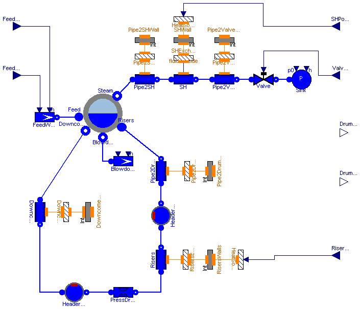
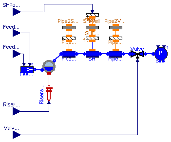
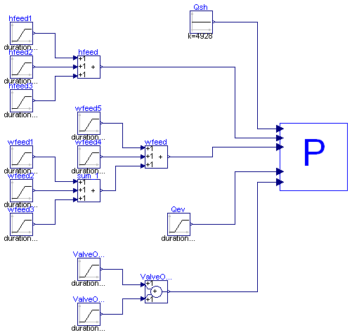

The CISEPlant model contains the full plant model, with input connectors for the boundary conditions, and output connectors for the drum pressure and level variable. The CISESim model contains the full plant model, plus signal generators to reproduce the boundary conditions. The other CISESim* models extend the CISESim model with the appropriate numerical values required to reproduce a specific experimental transient.
All simulation are initialized at steady-state by appropriate initial equations.
The CISE-data_2_0.zip file contains the data files of three experimental transients, which can be compared with the simulation results.
| Name | Description |
|---|---|
| Model of the CISE lab steam generator | |
| CISESim | CISE Plant model with boundary conditions and initial steady-state computation |
| CISESim120501 | |
| CISESim180503 | |
| CISESim180504 | |
| CISEPlant2States | Simplified model of the CISE lab steam generator |
| CISESim2States | CISE plant reduced model with boundary conditions and initial steady-state computation |
| CISESim2States120501 |

This is the model of the CISE steam generation plant described in the paper: F. Casella, A. Leva, "Modelica open library for power plant simulation: design and experimental validation", Proceedings of the 2003 Modelica Conference, Linkö eping, Sweden, 2003.
The geometric parameters are already set. The start values set in the model parameters are guess values around the nominal full load steady state (60 bar drum pressure).
This model cannot be simulated alone, as the boundary conditions (feedwater flowrate and enthalpy, steam valve opening, power to the risers and power to the superheater) are not set. See the CiseSim model instead.
| Type | Name | Description |
|---|---|---|
| output RealOutput | DrumPressure | |
| output RealOutput | DrumLevel | |
| input RealInput | FeedWaterFlow | |
| input RealInput | RiserPower | |
| input RealInput | ValveOpening | |
| input RealInput | SHPower | |
| input RealInput | FeedWaterEnthalpy |
model CISEPlant "Model of the CISE lab steam generator"
package Medium=Modelica.Media.Water.WaterIF97_ph(smoothModel=true);
Water.Drum Drum(
redeclare package Medium=Medium,
rint=0.115,
rext=0.125,
L=1.455,
Cm=4.08e6*1.195e-2,
tauev=15,
Kcs=0.01,
lm=19,
DrumOrientation=1,
afd=0.0,
gl=300,
Ks=100,
pstart=60e5,
hvstart=2.78e6,
Tmstart=545,
tauc=5,
gv=150,
hlstart=1.15e5,
initOpt=ThermoPower.Choices.Init.Options.steadyState);
Water.SourceW FeedWater(h=1.1059e6);
Water.Flow1D2ph Downcomer(
redeclare package Medium=Medium,
N=2,
L=15.923,
Dhyd=0.04922,
omega=0.1546,
A=1.903e-3,
wnom=0.23,
wnf=0.3,
H=-15.923,
Cfnom=0.01,
Kfc=1,
FFtype=3,
e=6.1e-4,
pstartin=60e5,
hstartin=1.15e6,
hstartout=1.15e6,
pstartout=61.18e5,
DynamicMomentum=false,
initOpt=ThermoPower.Choices.Init.Options.steadyState);
Water.Flow1D2ph Risers(
redeclare package Medium=Medium,
Nt=6,
L=14.16,
H=14.16,
Dhyd=0.02096,
omega=0.06584,
wnf=0.3,
HydraulicCapacitance=2,
Kfc=1,
Cfnom=0.013,
FFtype=3,
hstartout=1.5e6,
A=3.45e-4,
N=7,
e=1.2e-3,
pstartin=61.18e5,
pstartout=60.06e5,
wnom=0.23,
hstartin=1.15e6,
initOpt=ThermoPower.Choices.Init.Options.steadyState);
Water.Flow1D2ph Pipe2Drum(
redeclare package Medium=Medium,
N=2,
Nt=1,
L=2.779,
H=2.779,
Dhyd=0.0266,
omega=0.0835,
A=5.557e-4,
wnom=0.23,
wnf=0.1,
HydraulicCapacitance=1,
Cfnom=0.01,
FFtype=2,
pstartout=60e5,
e=9.9e-4,
hstartin=1.6e6,
hstartout=1.6e6,
pstartin=60.06e5,
initOpt=ThermoPower.Choices.Init.Options.steadyStateNoP);
Water.SinkW Blowdown(w0=0);
Water.Flow1D Pipe2SH(
redeclare package Medium=Medium,
N=2,
Nt=1,
L=11.48,
Dhyd=0.0205,
omega=0.0644,
A=3.301e-4,
wnom=0.06,
DynamicMomentum=false,
HydraulicCapacitance=2,
H=0,
FFtype=2,
hstartin=2.777e6,
hstartout=2.777e6,
pstartin=60e5,
pstartout=59e5,
Cfnom=0.004,
initOpt=ThermoPower.Choices.Init.Options.steadyState);
Water.Flow1D2phDB SH(
redeclare package Medium=Medium,
Nt=1,
L=30,
Dhyd=0.011,
omega=0.0346,
A=9.503e-5,
Cfnom=0.0059,
DynamicMomentum=false,
HydraulicCapacitance=2,
wnom=0.06,
FFtype=3,
hstartin=2.8e6,
hstartout=2.8e6,
pstartin=59e5,
pstartout=57e5,
N=5,
e=1.7e-3,
initOpt=ThermoPower.Choices.Init.Options.steadyState);
Water.Flow1D2ph Pipe2Valve(
redeclare package Medium=Medium,
N=2,
Nt=1,
L=6.6,
omega=0.0628,
Dhyd=0.02,
A=3.142e-4,
wnom=0.06,
wnf=0.1,
DynamicMomentum=false,
H=0,
FFtype=2,
HydraulicCapacitance=1,
hstartin=2.8e6,
hstartout=2.8e6,
pstartin=56e5,
pstartout=54.5e5,
Cfnom=0.004,
initOpt=ThermoPower.Choices.Init.Options.steadyState);
Water.ValveVap Valve(
redeclare package Medium=Medium,
pnom=54.497e5,
dpnom=48.997e5,
wnom=2*.06,
CvData=0,
Av=2.7e-5);
Water.SinkP Sink(p0=5.5e5);
Thermal.HeatSource1D HeatSourceSH(
Nt=1,
L=30,
omega=0.0628,
N=5);
Thermal.HeatSource1D HeatSourceRisers(
L=14.16,
omega=0.08388,
Nt=6,
N=7);
Water.Header HeaderLower(
redeclare package Medium=Medium,
V=8.372e-4,
S=7.184e-2,
gamma=2000,
Cm=4.08e6*4.51e-4,
hstart=1.1e6,
Tmstart=540,
pstartin=61.18e5,
pstartout=61.18e5,
initOpt=ThermoPower.Choices.Init.Options.steadyStateNoP);
Water.Header HeaderUpper(
redeclare package Medium=Medium,
V=8.372e-4,
S=7.184e-2,
gamma=2000,
Cm=4.08e6*4.51e-4,
pstartin=60.2e5,
pstartout=60.2e5,
Tmstart=540,
hstart=1.6e6,
initOpt=ThermoPower.Choices.Init.Options.steadyStateNoP);
Thermal.ConvHT DowncomerExchange(N=2, gamma=1800);
Thermal.ConvHT RisersExchange(gamma=10000, N=7);
Thermal.ConvHT Pipe2DrumExchange(N=2, gamma=10000);
Thermal.ConvHT Pipe2SHExchange(N=2, gamma=3000);
Thermal.ConvHT_htc SHExchange(N=5);
Thermal.ConvHT Pipe2ValveExchange(N=2, gamma=3000);
Thermal.MetalTube DowncomerWall(
N=2,
L=15.923,
rint=0.02461,
rext=0.03015,
rhomcm=4.08e6,
lambda=19,
WallRes=true,
Tstart1=540,
TstartN=540,
initOpt=ThermoPower.Choices.Init.Options.steadyState);
Thermal.MetalTube RisersWalls(
L=14.16,
rint=0.01048,
rext=0.01335,
lambda=19,
rhomcm=4.08e6,
WallRes=true,
N=7,
Tstart1=548,
TstartN=548,
initOpt=ThermoPower.Choices.Init.Options.steadyState);
Thermal.MetalTube Pipe2DrumWall(
N=2,
L=2.779,
rint=0.0133,
rext=0.0167,
rhomcm=4.08e6,
lambda=19,
WallRes=true,
Tstart1=548,
TstartN=548,
initOpt=ThermoPower.Choices.Init.Options.steadyState);
Thermal.MetalTube Pipe2SHWall(
N=2,
L=11.480,
rint=0.01025,
rext=0.01305,
rhomcm=4.08e6,
lambda=19,
WallRes=true,
Tstart1=548,
TstartN=548,
initOpt=ThermoPower.Choices.Init.Options.steadyState);
Thermal.MetalTube SHWall(
L=30,
rint=0.0055,
rext=0.0100,
rhomcm=4.08e6,
lambda=19,
WallRes=true,
Tstart1=551,
TstartN=551,
N=5,
initOpt=ThermoPower.Choices.Init.Options.steadyState);
Thermal.MetalTube Pipe2ValveWall(
L=6.6,
rint=0.0100,
rext=0.01275,
rhomcm=4.08e6,
lambda=19,
WallRes=true,
N=2,
Tstart1=548,
TstartN=548,
initOpt=ThermoPower.Choices.Init.Options.steadyState);
Water.PressDrop PressDrop(
redeclare package Medium=Medium,
wnom=0.23,
wnf=0.1,
K=3,
Kf=1e8,
FFtype=2,
A=5.62e-5,
Kfc=2);
Modelica.Blocks.Interfaces.RealOutput DrumPressure;
Modelica.Blocks.Interfaces.RealOutput DrumLevel;
Modelica.Blocks.Interfaces.RealInput FeedWaterFlow;
Modelica.Blocks.Interfaces.RealInput RiserPower;
Modelica.Blocks.Interfaces.RealInput ValveOpening;
Modelica.Blocks.Interfaces.RealInput SHPower;
Modelica.Blocks.Interfaces.RealInput FeedWaterEnthalpy;
equation
connect(Pipe2Drum.infl, HeaderUpper.outlet);
connect(HeaderUpper.inlet, Risers.outfl);
connect(Downcomer.wall, DowncomerExchange.side2);
connect(RisersExchange.side2, RisersWalls.int);
connect(Risers.wall, RisersExchange.side1);
connect(SH.outfl, Pipe2Valve.infl);
connect(Valve.outlet, Sink.flange);
connect(Pipe2Valve.outfl, Valve.inlet);
connect(HeaderLower.outlet, PressDrop.inlet);
connect(PressDrop.outlet, Risers.infl);
connect(Pipe2Drum.wall, Pipe2DrumExchange.side1);
connect(Pipe2DrumExchange.side2, Pipe2DrumWall.int);
connect(RisersWalls.ext, HeatSourceRisers.wall);
DrumPressure = Drum.p;
DrumLevel = Drum.y;
connect(Pipe2Valve.wall, Pipe2ValveExchange.side2);
connect(Pipe2SH.wall, Pipe2SHExchange.side2);
connect(Pipe2SHExchange.side1, Pipe2SHWall.int);
connect(Pipe2ValveExchange.side1, Pipe2ValveWall.int);
connect(DowncomerWall.int, DowncomerExchange.side1);
connect(Blowdown.flange, Drum.blowdown);
connect(SH.infl, Pipe2SH.outfl);
connect(HeaderLower.inlet, Downcomer.outfl);
connect(Downcomer.infl, Drum.downcomer);
connect(Pipe2Drum.outfl, Drum.riser);
connect(Pipe2SH.infl, Drum.steam);
connect(FeedWater.flange, Drum.feedwater);
connect(FeedWaterEnthalpy, FeedWater.in_h);
connect(FeedWaterFlow, FeedWater.in_w0);
connect(RiserPower, HeatSourceRisers.power);
connect(ValveOpening, Valve.theta);
connect(SHPower, HeatSourceSH.power);
connect(SHExchange.fluidside, SH.wall);
connect(SHExchange.otherside, SHWall.int);
connect(SHWall.ext, HeatSourceSH.wall);
end CISEPlant;
This model provides the boundary condition values to the CISEPlantmodel; it can be used to simulate open-loop transients.
The steady state is obtained by setting the derivatives of all the state variables to zero in the initial equation section. The offset values for ValveOpening1 and wfeed1, i.e. the parameters ValveOpening_offset and wfeed_offset have a fixed=false attribute. Their actual values are set by the two additional initial equations specifying the initial drum level and pressure.
The CISESim120501, CISESim180503, CISESim180504 models extend CISESim by adding suitable numerical values to the boundary condition signal generators.
| Type | Name | Default | Description |
|---|---|---|---|
| MassFlowRate | wfeed_offset | 6.0e-2 | Offset of feedwater flow rate [kg/s] |
| Real | ValveOpening_offset | 0.4 | Offset of valve opening |
| Pressure | InitialDrumPressure | 5.9359e+006 | [Pa] |
| Length | InitialDrumLevel | -0.091 | [m] |
model CISESim
"CISE Plant model with boundary conditions and initial steady-state computation"
parameter MassFlowRate wfeed_offset(fixed=false) = 6.0e-2
"Offset of feedwater flow rate";
parameter Real ValveOpening_offset(fixed=false) = 0.4
"Offset of valve opening";
parameter Pressure InitialDrumPressure = 5.9359e+006;
parameter Length InitialDrumLevel = -0.091;
CISEPlant Plant;
Modelica.Blocks.Sources.Constant Qsh(k=4928);
Modelica.Blocks.Sources.Ramp Qev(
duration=1,
height=0,
offset=1.0141e5);
Modelica.Blocks.Sources.Ramp wfeed1(
duration=1,
height=0,
startTime=50,
offset=wfeed_offset);
Modelica.Blocks.Math.Add3 wfeed;
Modelica.Blocks.Sources.Ramp wfeed2(
duration=1,
height=0,
offset=0,
startTime=0);
Modelica.Blocks.Sources.Ramp ValveOpening1(
duration=1,
height=0,
offset=ValveOpening_offset);
Modelica.Blocks.Sources.Ramp ValveOpening2(
duration=1,
height=0,
offset=0);
Modelica.Blocks.Math.Add3 sum_1;
Modelica.Blocks.Sources.Ramp wfeed3(
duration=1,
height=0,
offset=0,
startTime=0);
Modelica.Blocks.Sources.Ramp wfeed5(
duration=1,
height=0,
offset=0,
startTime=0);
Modelica.Blocks.Sources.Ramp wfeed4(
duration=1,
height=0,
offset=0,
startTime=0);
Modelica.Blocks.Sources.Ramp hfeed1(
duration=1,
height=0,
offset=0);
Modelica.Blocks.Sources.Ramp hfeed2(
duration=1,
height=0,
offset=0);
Modelica.Blocks.Math.Add3 hfeed;
Modelica.Blocks.Sources.Ramp hfeed3(
duration=1,
height=0,
offset=0);
Modelica.Blocks.Math.Add sum_3;
Modelica.Blocks.Sources.Ramp ValveOpening3(
duration=1,
height=0,
offset=0);
Modelica.Blocks.Math.Add ValveOpening;
equation
// Connection of the control signals to the process variables
connect(Plant.FeedWaterEnthalpy,hfeed.y);
connect(Plant.SHPower,Qsh.y);
connect(Plant.RiserPower,Qev.y);
connect(Plant.FeedWaterFlow,wfeed.y);
connect(Plant.ValveOpening,ValveOpening.y);
// Block diagram connections
initial equation
// Additional equations to determine the non-fixed parameters
Plant.Drum.y=InitialDrumLevel;
Plant.Drum.p=InitialDrumPressure;
equation
connect(wfeed5.y, wfeed.u1);
connect(wfeed4.y, wfeed.u2);
connect(sum_1.y, wfeed.u3);
connect(hfeed.u1, hfeed1.y);
connect(hfeed.u2, hfeed2.y);
connect(hfeed.u3, hfeed3.y);
connect(ValveOpening.u1, sum_3.y);
connect(ValveOpening.u2, ValveOpening3.y);
connect(sum_3.u1, ValveOpening1.y);
connect(ValveOpening2.y, sum_3.u2);
connect(sum_1.u3, wfeed3.y);
connect(sum_1.u2, wfeed2.y);
connect(sum_1.u1, wfeed1.y);
end CISESim;
This model starts from the required steady-state, and can be simulated for 1200 s to replicate the experimental data.
| Type | Name | Default | Description |
|---|---|---|---|
| MassFlowRate | wfeed_offset | 6.0e-2 | Offset of feedwater flow rate [kg/s] |
| Real | ValveOpening_offset | 0.4 | Offset of valve opening |
| Pressure | InitialDrumPressure | 59.359e5 | [Pa] |
| Length | InitialDrumLevel | -0.091 | [m] |
model CISESim120501
extends CISESim(
InitialDrumPressure = 59.359e5,
InitialDrumLevel = -0.091,
wfeed_offset = 6.0e-2,
ValveOpening_offset = 0.4,
hfeed1(offset = 1.10593e6),
wfeed1(startTime = 63,
height = 0.0017,
duration = 16),
wfeed2(startTime = 80,
height = 0.0009,
duration = 540),
Qev(offset = 1.0141e5,
startTime = 63,
height = -11.4e3,
duration = 7),
Qsh(k=4928));
end CISESim120501;
This model starts from the required steady-state, and can be simulated for 1200 s to replicate the experimental data.
| Type | Name | Default | Description |
|---|---|---|---|
| MassFlowRate | wfeed_offset | 2.89e-2 | Offset of feedwater flow rate [kg/s] |
| Real | ValveOpening_offset | 0.4 | Offset of valve opening |
| Pressure | InitialDrumPressure | 34.070e5 | [Pa] |
| Length | InitialDrumLevel | -0.0507 | [m] |
model CISESim180503
extends CISESim(
InitialDrumPressure = 34.070e5,
InitialDrumLevel = -0.0507,
wfeed_offset = 2.89e-2,
ValveOpening_offset = 0.4,
hfeed1(offset = 9.7371109e5,
startTime = 0,
duration = 400,
height = 5000),
hfeed2(startTime = 400,
duration = 300,
height = -4200),
hfeed3(startTime = 700,
duration = 500,
height = 14000),
wfeed1(startTime = 80,
height = 0.0015,
duration = 60),
wfeed2(startTime = 160,
height = -0.0021,
duration = 15),
wfeed3(startTime = 200,
height = 0.002,
duration = 650),
wfeed4(startTime = 865,
height = 0.0016,
duration = 3),
wfeed5(startTime = 868,
height = 0.001,
duration = 340),
ValveOpening1(startTime = 72,
duration = 12,
height = 0.062),
Qev(offset=5.296179e4,
startTime = 150,
height = -200,
duration = 350),
Qsh(k=4570.7));
end CISESim180503;
This model starts from the required steady-state, and can be simulated for 1200 s to replicate the experimental data.
| Type | Name | Default | Description |
|---|---|---|---|
| MassFlowRate | wfeed_offset | 2.838e-2 | Offset of feedwater flow rate [kg/s] |
| Real | ValveOpening_offset | 0.4 | Offset of valve opening |
| Pressure | InitialDrumPressure | 29.3052e5 | [Pa] |
| Length | InitialDrumLevel | -0.0574 | [m] |
model CISESim180504
extends CISESim(
InitialDrumPressure = 29.3052e5,
InitialDrumLevel = -0.0574,
wfeed_offset = 2.838e-2,
ValveOpening_offset = 0.4,
ValveOpening1(startTime = 72,
duration = 40,
height = -0.0135),
ValveOpening2(startTime = 112,
duration = 60,
height = -0.0080),
ValveOpening3(startTime = 172,
duration = 140,
height = -0.0040),
hfeed1(offset = 9.7371109e5,
startTime = 140,
duration = 460,
height = -17000),
hfeed2(startTime = 600,
duration = 200,
height = 11000),
hfeed3(startTime = 800,
duration = 400,
height = 7000),
wfeed1(startTime = 68,
height = -0.006,
duration = 3),
wfeed2(startTime = 71,
height = -0.005,
duration = 75),
wfeed3(startTime = 400,
height = -0.001,
duration = 450),
Qev(offset = 5.1825e4,
startTime = 150,
duration = 0.1,
height = -200),
Qsh(k=4661.7));
end CISESim180504;

This is a simplified model of the CISE steam generation plant described in the paper: F. Casella, A. Leva, "Modelica open library for power plant simulation: design and experimental validation", Proceedings of the 2003 Modelica Conference, Linkö eping, Sweden, 2003. The drum model is based on the assumption of thermodynamic equilibrium between the liquid and vapour phases, thus leading to a drum model with only two states (pressure and liquid volume).
The geometric parameters are already set. The start values set in the model parameters are guess values around the nominal full load steady state (60 bar drum pressure).
This model cannot be simulated alone, as the boundary conditions (feedwater flowrate and enthalpy, steam valve opening, power to the risers and power to the superheater) are not set. See the CiseSim2States model instead.
| Type | Name | Default | Description |
|---|---|---|---|
| Length | r | 0.115 | Drum diameter [m] |
| Length | H | 1.455 | Drum height [m] |
| Type | Name | Description |
|---|---|---|
| input RealInput | SHPower | |
| input RealInput | ValveOpening | |
| input RealInput | RiserPower | |
| input RealInput | FeedWaterEnthalpy | |
| input RealInput | FeedWaterFlow |
model CISEPlant2States
"Simplified model of the CISE lab steam generator"
package Medium=Modelica.Media.Water.WaterIF97_ph;
constant Real pi=Modelica.Constants.pi;
parameter Length r=0.115 "Drum diameter";
parameter Length H=1.455 "Drum height";
Pressure DrumPressure;
Length DrumLevel;
Water.SourceW FeedWater(h=1.1059e6);
Water.Flow1D Pipe2SH(
redeclare package Medium=Medium,
Nt=1,
L=11.48,
Dhyd=0.0205,
omega=0.0644,
A=3.301e-4,
wnom=0.06,
DynamicMomentum=false,
HydraulicCapacitance=2,
H=0,
hstartin=2.777e6,
hstartout=2.777e6,
pstartin=60e5,
pstartout=59e5,
Cfnom=0.004,
wnf=1,
FFtype=ThermoPower.Choices.Flow1D.FFtypes.Cfnom,
N=2,
initOpt=ThermoPower.Choices.Init.Options.steadyState);
Water.Flow1D2phDB SH(
redeclare package Medium=Medium,
Nt=1,
L=30,
Dhyd=0.011,
omega=0.0346,
A=9.503e-5,
Cfnom=0.0059,
DynamicMomentum=false,
HydraulicCapacitance=2,
wnom=0.06,
hstartin=2.8e6,
hstartout=2.8e6,
pstartin=59e5,
pstartout=57e5,
N=5,
e=1.7e-3,
wnf=0.1,
FFtype=ThermoPower.Choices.Flow1D.FFtypes.Colebrook,
initOpt=ThermoPower.Choices.Init.Options.steadyState);
Water.Flow1D2ph Pipe2Valve(
redeclare package Medium=Medium,
N=2,
Nt=1,
L=6.6,
omega=0.0628,
Dhyd=0.02,
A=3.142e-4,
wnom=0.06,
DynamicMomentum=false,
H=0,
hstartin=2.8e6,
hstartout=2.8e6,
pstartin=56e5,
pstartout=54.5e5,
Cfnom=0.004,
HydraulicCapacitance=1,
wnf=1,
FFtype=ThermoPower.Choices.Flow1D.FFtypes.Cfnom,
initOpt=ThermoPower.Choices.Init.Options.steadyState);
Water.ValveVap Valve(
redeclare package Medium=Medium,
pnom=54.497e5,
dpnom=48.997e5,
wnom=2*.06,
CvData=0,
Av=2.7e-5,
b=0.1);
Water.SinkP Sink(p0=5.5e5);
Thermal.HeatSource1D HeatSourceSH(
Nt=1,
L=30,
omega=0.0628,
N=5);
Thermal.ConvHT Pipe2SHExchange(gamma=3000, N=2);
Thermal.ConvHT_htc SHExchange(N=5);
Thermal.ConvHT Pipe2ValveExchange(N=2, gamma=3000);
Thermal.MetalTube Pipe2SHWall(
L=11.480,
rint=0.01025,
rext=0.01305,
rhomcm=4.08e6,
lambda=19,
WallRes=true,
Tstart1=548,
TstartN=548,
N=2,
initOpt=ThermoPower.Choices.Init.Options.steadyState);
Thermal.MetalTube SHWall(
L=30,
rint=0.0055,
rext=0.0100,
rhomcm=4.08e6,
lambda=19,
WallRes=true,
Tstart1=551,
TstartN=551,
N=5,
initOpt=ThermoPower.Choices.Init.Options.steadyState);
Thermal.MetalTube Pipe2ValveWall(
L=6.6,
rint=0.0100,
rext=0.01275,
rhomcm=4.08e6,
lambda=19,
WallRes=true,
N=2,
Tstart1=548,
TstartN=548,
initOpt=ThermoPower.Choices.Init.Options.steadyState);
Water.Drum2States DrumBoiler(
redeclare package Medium=Medium,
Vd=0.0604,
cm=523,
pstart=60e5,
Vldstart=pi*r^2*H/2,
Vdcr=0.0628,
Mmd=93,
Mmdcr=270,
initOpt=ThermoPower.Choices.Init.Options.steadyState);
Modelica.Thermal.HeatTransfer.PrescribedHeatFlow RisersHeat;
Modelica.Blocks.Interfaces.RealInput SHPower;
Modelica.Blocks.Interfaces.RealInput ValveOpening;
Modelica.Blocks.Interfaces.RealInput RiserPower;
Modelica.Blocks.Interfaces.RealInput FeedWaterEnthalpy;
Modelica.Blocks.Interfaces.RealInput FeedWaterFlow;
equation
DrumLevel = DrumBoiler.Vld/(pi*r^2)-H/2;
DrumPressure = DrumBoiler.p;
connect(Pipe2SH.wall, Pipe2SHExchange.side2);
connect(Pipe2SHExchange.side1, Pipe2SHWall.int);
connect(Pipe2Valve.wall, Pipe2ValveExchange.side2);
connect(Pipe2ValveExchange.side1, Pipe2ValveWall.int);
connect(SHWall.int, SHExchange.otherside);
connect(SHExchange.fluidside, SH.wall);
connect(HeatSourceSH.wall, SHWall.ext);
connect(DrumBoiler.heat, RisersHeat.port);
connect(Pipe2SH.outfl, SH.infl);
connect(SH.outfl, Pipe2Valve.infl);
connect(Pipe2Valve.outfl, Valve.inlet);
connect(Valve.outlet, Sink.flange);
connect(Pipe2SH.infl, DrumBoiler.steam);
connect(DrumBoiler.feed, FeedWater.flange);
connect(RiserPower, RisersHeat.Q_flow);
connect(ValveOpening, Valve.theta);
connect(SHPower, HeatSourceSH.power);
connect(FeedWaterEnthalpy, FeedWater.in_h);
connect(FeedWaterFlow, FeedWater.in_w0);
end CISEPlant2States;

This model provides the boundary condition values to the CISEPlant2Statesmodel; it can be used to simulate open-loop transients.
The steady state is obtained by setting the derivatives of all the state variables to zero in the initial equation section. The offset values for ValveOpening1 and wfeed1, i.e. the parameters ValveOpening_offset and wfeed_offset have a fixed=false attribute. Their actual values are set by the two additional initial equations specifying the initial drum level and pressure.
The CISESim2States120501 model extends CISESim2States by adding suitable numerical values to the boundary condition signal generators.
| Type | Name | Default | Description |
|---|---|---|---|
| MassFlowRate | wfeed_offset | 6.0e-2 | Offset of feedwater flow rate [kg/s] |
| Real | ValveOpening_offset | 0.4 | Offset of valve opening |
| Pressure | InitialDrumPressure | 5.9359e+006 | [Pa] |
| Length | InitialDrumLevel | -0.091 | [m] |
model CISESim2States
"CISE plant reduced model with boundary conditions and initial steady-state computation"
parameter MassFlowRate wfeed_offset(fixed=false) = 6.0e-2
"Offset of feedwater flow rate";
parameter Real ValveOpening_offset(fixed=false) = 0.4
"Offset of valve opening";
parameter Pressure InitialDrumPressure = 5.9359e+006;
parameter Length InitialDrumLevel = -0.091;
CISEPlant2States Plant;
Modelica.Blocks.Sources.Constant Qsh(k=4928);
Modelica.Blocks.Sources.Ramp Qev(
duration=1,
height=0,
offset=1.0141e5);
Modelica.Blocks.Sources.Ramp wfeed1(
duration=1,
height=0,
startTime=50,
offset=wfeed_offset);
Modelica.Blocks.Math.Add3 wfeed;
Modelica.Blocks.Sources.Ramp wfeed2(
duration=1,
height=0,
offset=0,
startTime=0);
Modelica.Blocks.Sources.Ramp ValveOpening1(
duration=1,
height=0,
offset=ValveOpening_offset);
Modelica.Blocks.Sources.Ramp ValveOpening2(
duration=1,
height=0,
offset=0);
Modelica.Blocks.Math.Add3 sum_1;
Modelica.Blocks.Sources.Ramp wfeed3(
duration=1,
height=0,
offset=0,
startTime=0);
Modelica.Blocks.Sources.Ramp wfeed5(
duration=1,
height=0,
offset=0,
startTime=0);
Modelica.Blocks.Sources.Ramp wfeed4(
duration=1,
height=0,
offset=0,
startTime=0);
Modelica.Blocks.Sources.Ramp hfeed1(
duration=1,
height=0,
offset=0);
Modelica.Blocks.Sources.Ramp hfeed2(
duration=1,
height=0,
offset=0);
Modelica.Blocks.Math.Add3 hfeed;
Modelica.Blocks.Sources.Ramp hfeed3(
duration=1,
height=0,
offset=0);
Modelica.Blocks.Math.Add ValveOpening;
equation
connect(wfeed3.y, sum_1.u3);
connect(wfeed2.y, sum_1.u2);
connect(wfeed1.y, sum_1.u1);
connect(sum_1.y, wfeed.u3);
initial equation
// Additional equations to determine the non-fixed parameters
Plant.DrumLevel = InitialDrumLevel;
Plant.DrumPressure = InitialDrumPressure;
equation
connect(hfeed.y, Plant.FeedWaterEnthalpy);
connect(Qsh.y, Plant.SHPower);
connect(Qev.y, Plant.RiserPower);
connect(ValveOpening.y, Plant.ValveOpening);
connect(wfeed.y, Plant.FeedWaterFlow);
connect(hfeed1.y, hfeed.u1);
connect(hfeed2.y, hfeed.u2);
connect(hfeed3.y, hfeed.u3);
connect(wfeed5.y, wfeed.u1);
connect(wfeed4.y, wfeed.u2);
connect(ValveOpening1.y, ValveOpening.u1);
connect(ValveOpening2.y, ValveOpening.u2);
end CISESim2States;
This model must be simulated for 20000 s to obtain the required steady state. The actual transient can then be simulated by importing the final steady state, setting the controller gains to zero, and setting the appropriate values to the signal generators height parameters:
importInitial()
ValveOpening.steadyStateGain=0.0
wfeed.steadyStateGain=0.0
Qev.startTime={63};
Qev.height={-11.4e3};
Qev.duration={7};
wfeed1.startTime={63};
wfeed1.height={0.0017};
wfeed1.duration={16};
wfeed2.startTime={80};
wfeed2.height={0.0009};
wfeed2.duration={540};
The whole simulation sequence can be obtained by running the 120501_2s.mos Dymola script.
| Type | Name | Default | Description |
|---|---|---|---|
| MassFlowRate | wfeed_offset | 6.0e-2 | Offset of feedwater flow rate [kg/s] |
| Real | ValveOpening_offset | 0.4 | Offset of valve opening |
| Pressure | InitialDrumPressure | 59.359e5 | [Pa] |
| Length | InitialDrumLevel | -0.091 | [m] |
model CISESim2States120501
extends CISESim2States(
InitialDrumPressure = 59.359e5,
InitialDrumLevel = -0.091,
wfeed_offset = 6.0e-2,
ValveOpening_offset = 0.4,
hfeed1(offset = 1.10593e6),
wfeed1(startTime = 63,
height = 0.0017,
duration = 16),
wfeed2(startTime = 80,
height = 0.0009,
duration = 540),
Qev(offset = 1.0141e5,
startTime = 63,
height = -11.4e3,
duration = 7),
Qsh(k=4928));
end CISESim2States120501;